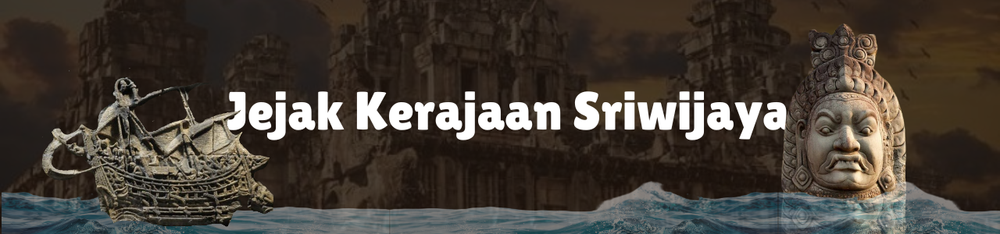

Daftar Pustaka
- https://prabumulihpos.disway.id/sejarah-budaya/read/638512/wajib-tahu-ini-sedekah-adat-tradisi-turun-menurun-di-sumatera-selatan
- https://www.kabarpalu.net/sejarah/1064686183/melintasi-laut-kisah-invasi-india-ke-sriwijaya
- https://www.detik.com/sumbagsel/budaya/d-7923972/daftar-raja-raja-kerajaan-sriwijaya-serta-perannya
- https://id.wikipedia.org/wiki/Perang_Medang%E2%80%93Sriwijaya
- https://spi.fah.uin-alauddin.ac.id/artikel-3887-sejarah-kerajaan-sriwijaya
- https://mongabay.co.id/2019/11/07/kembalikan-tradisi-masyarakat-sriwijaya-untuk-lestarikan-alam/
- https://id.wikipedia.org/wiki/Prasasti_Kedukan_Bukit
- https://id.wikipedia.org/wiki/Prasasti_Kota_Kapur
- https://www.sumsel.co/gaya-hidup/01612/22092025/tradisi-sedekah-sungai-musi-warisan-budaya-dan-kearifan-lokal-masyarakat-sumatera-selatan
- https://www.detik.com/sumbagsel/budaya/d-7186694/masa-kejayaan-kerajaan-sriwijaya
- https://id.wikipedia.org/wiki/Prasasti_Talang_Tuo
- https://id.wikipedia.org/wiki/Candi_Muara_Takus
- https://id.wikipedia.org/wiki/Kompleks_Candi_Muaro_Jambi
- https://youtu.be/58HtOFCyCf8?si=mvykrQKbE-RbcY4Z
Terimakasih Telah Membaca! UuU